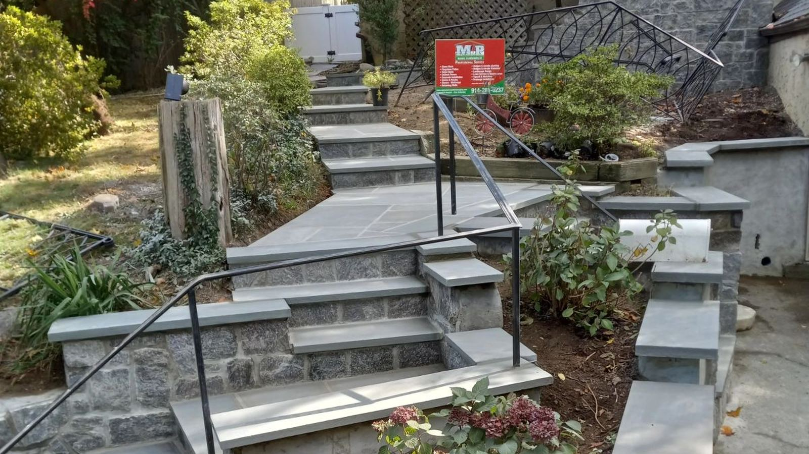
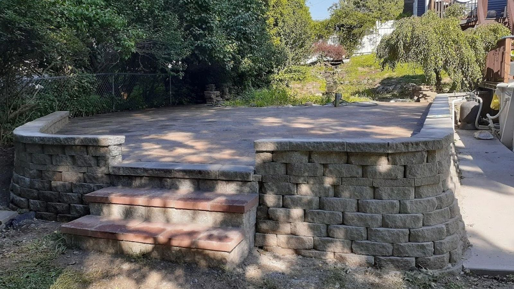
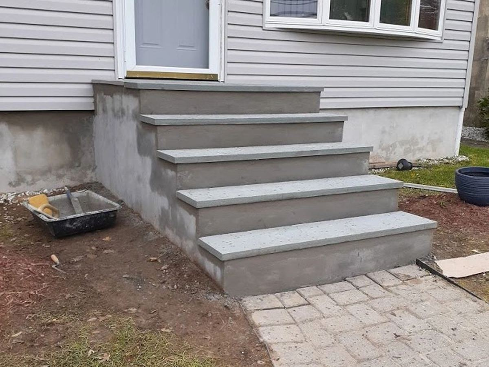
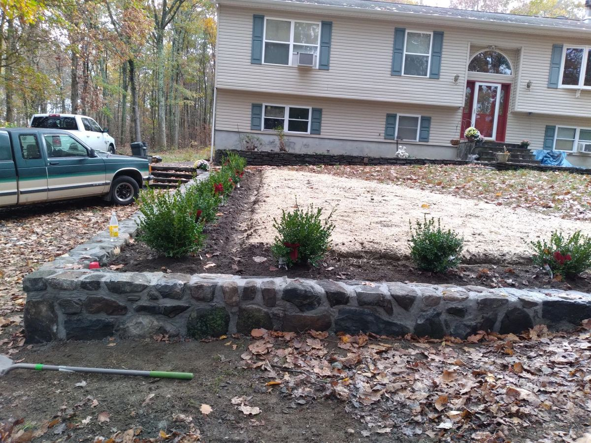
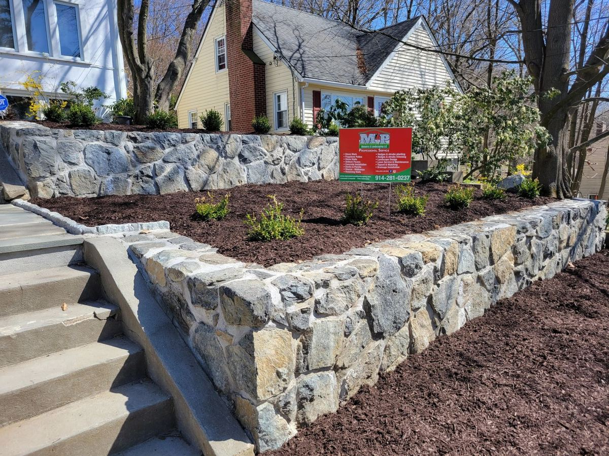
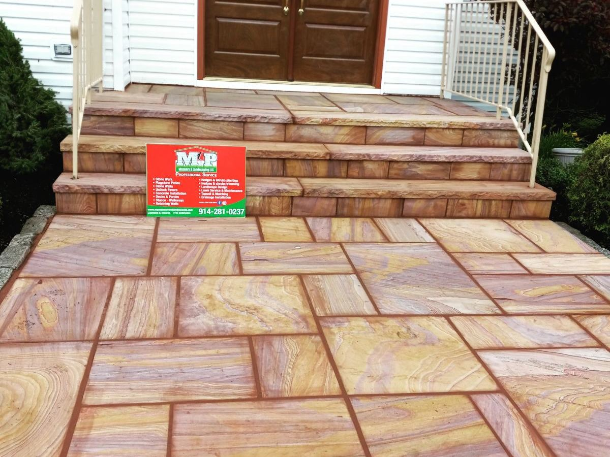
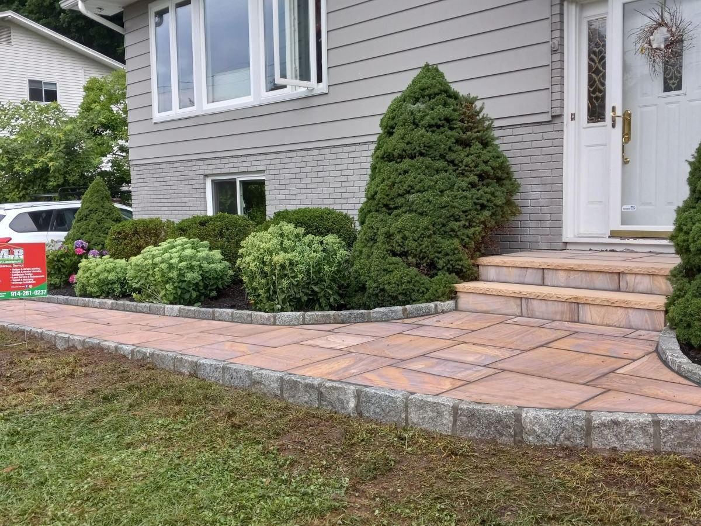
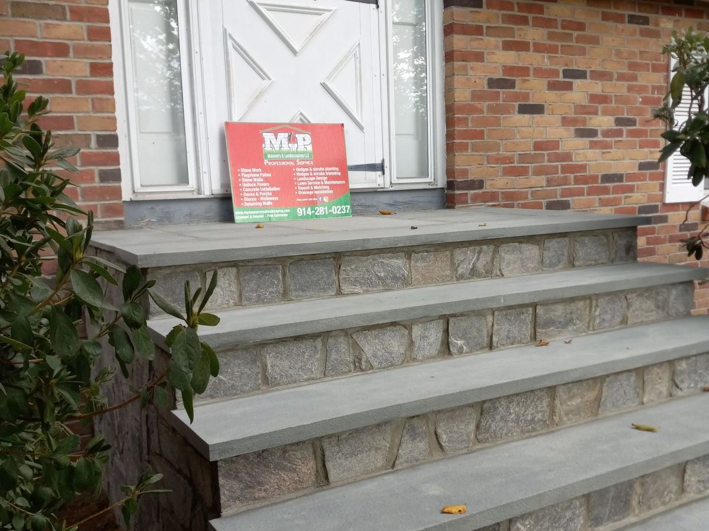
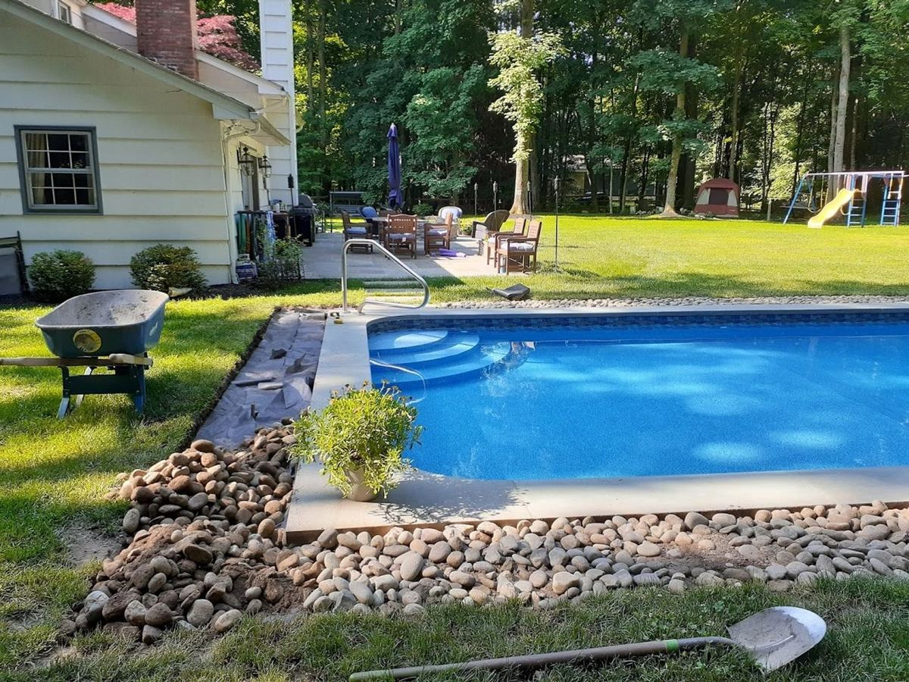
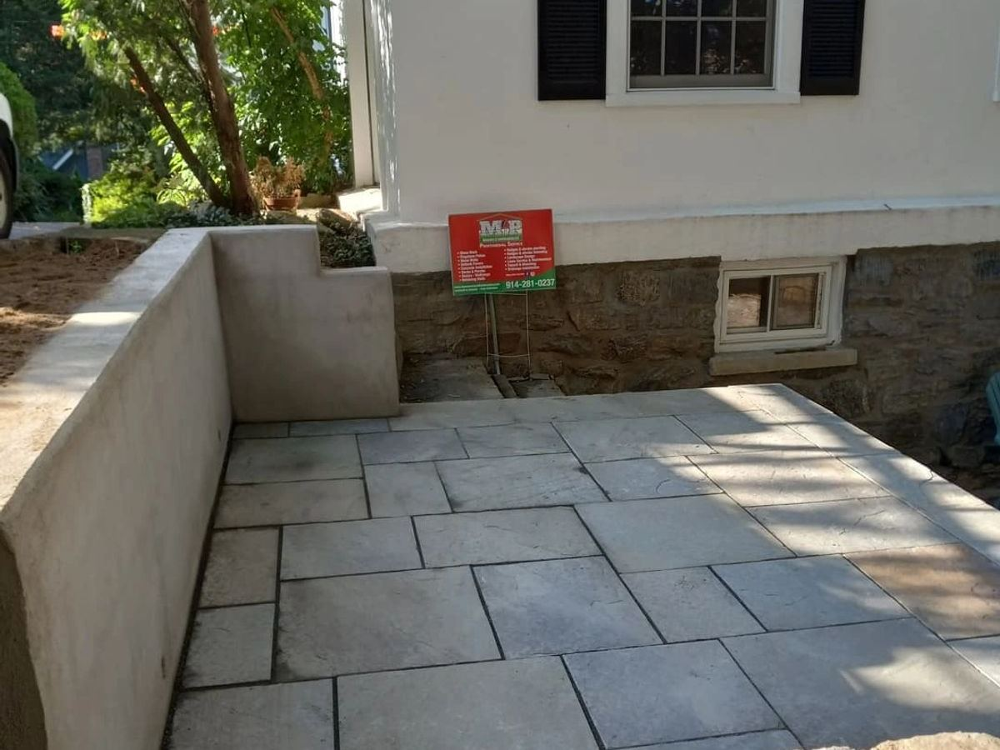

Steps & walkways
Stone and paver steps, entry walkways and stoops built to grade properly the first time — so they don't heave or crack through a New York winter.

We build the steps, patios, walls and gardens homeowners around West Harrison keep for years — same care on a small repair as on a full renovation.
With 15 years of masonry and landscaping experience, we work one-on-one with homeowners across Westchester County — no subcontracted crews, no upsell scripts, just a straight plan for your yard. Here's where we spend most of our time.
Stone and paver steps, entry walkways and stoops built to grade properly the first time — so they don't heave or crack through a New York winter.
Bluestone, paver and flagstone patios and pool surrounds, laid flat and level with proper drainage underneath — built to be walked on for years, not one season.
Natural stone and block retaining walls that hold a slope where a lawn alone can't — set to stay put through freeze-thaw seasons, not just look good the day we leave.
Beds, borders and plantings that finish the job around the stonework — the greenery that makes a new patio or wall look like it was always meant to be there.

A steep yard or a settling grade needs more than mulch — we cut, set and grade natural stone that holds through the freeze-thaw cycles a Westchester County winter throws at it, season after season.
A real MP Masonry & Landscaping job — from our own project photosEvery photo below is a real MP Masonry & Landscaping job — no stock, no borrowed images. Tap any one to take a closer look.








We're based in West Harrison and keep our jobs close to home, so you get a crew that knows the area and shows up when it says it will. We build and plant in:
Not sure if you're in range? Give us a call — if you're around West Harrison or the rest of Westchester County, we can usually help.
The fastest way to get a quote is a quick call — you'll talk to us directly, not a call center. Tell us what your yard or stonework needs and we'll set up a free, no-obligation consultation.
(914) 587-8363